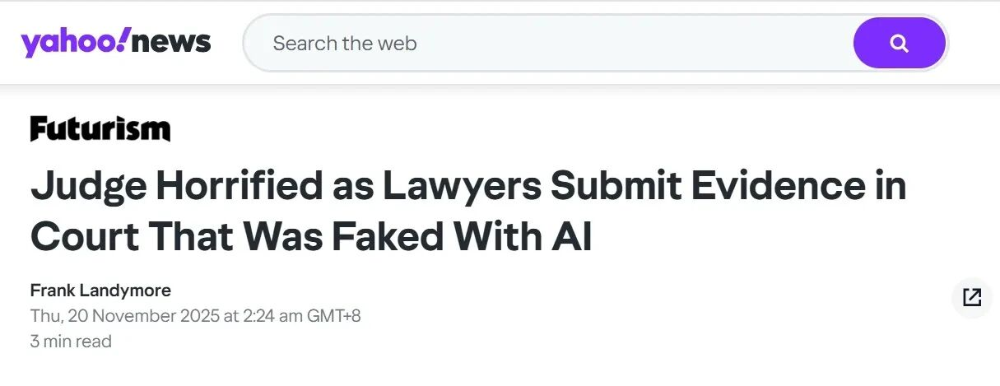
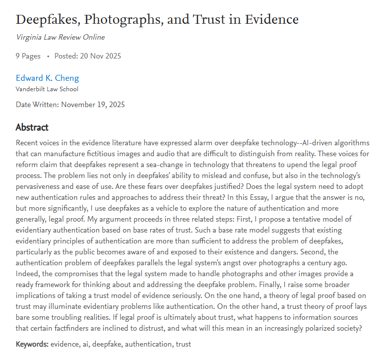

Using Fake Images Generated by AI to Scam Refunds? AI Forgery Is Replicating Historical Fraud Cycles
Key Points
- Cheap, phone-based generative AI now lets ordinary users fabricate convincing visual evidence for fraud, from e-commerce refund scams to courtroom submissions.
- The core disruption is not that forgery is new, but that AI has sharply lowered its cost, weakening the default trust once granted to photos and videos.
- History suggests this is not a civilizational collapse of trust but another cycle in which new recording technologies trigger skepticism and then prompt new verification rules.
- Platforms and institutions should respond by improving verifiability through in-app capture, multi-angle and detail-shot requirements, and dispute systems that use AI detection as a clue rather than a final verdict.
1. When Evidence Can Be "Made Up on the Spot" by AI: Two Cases — From Crab Refunds to Courtroom Deepfakes
Recent incidents show how generative AI is changing the way false evidence is produced and used. The underlying motive—fraud, opportunism, or strategic deception—has not changed. What has changed is the toolset: image and video fabrication is no longer confined to specialists with technical skill and expensive equipment. It is now accessible to ordinary people with a smartphone.
The "Refund Only" Incident: When AI-Generated Fake Images Become a Weapon for "Wool-Collecting" Scammers
On December 2, Qilu Evening News reported that Ms. Gao, who runs an online mitten crab shop in Jiangsu, was targeted in an "AI fake-image refund" scheme. A customer in Guangzhou bought eight crabs and later claimed that six had arrived dead, sending photos and short videos as proof. At first glance, the crabs did appear lifeless, with their legs raised and motionless in a way that might suggest they had died in transit.
But Ms. Gao, an experienced crab seller, sensed that something was wrong. A dead crab’s muscles relax and its segmented legs should droop naturally. In the images she received, however, the legs were stiffly pointed upward, as if posed by external force rather than by natural death. The customer then sent another video, pointing to the supposedly dead crabs one by one, seemingly to eliminate any suspicion of manipulation. Balancing pressure against trust, Ms. Gao refunded 195 yuan.
Only afterward, when she reviewed the footage frame by frame, did she spot the decisive inconsistency: the number of male and female crabs did not match across the two videos. Several female crabs shown earlier had become male crabs in the later clip. She concluded that at least part of the material had been AI-generated. When she posted a warning to other merchants, her video was reported and removed, and she even received threatening direct messages, leaving her little choice but to call the police. Investigators in Guangzhou later confirmed that the customer had used a mobile phone to generate false images for fraud. The 195 yuan was recovered, and the offender was given eight days of administrative detention.
The amount involved was small, and on the surface the case looked like an ordinary e-commerce dispute. Yet its method was distinctly contemporary. The impulse to cheat was old; the means had been upgraded. The power to fabricate evidence had moved from a specialized capability to a mass one.
At the Other End of the Judicial System: AI-Forged Evidence "Boldly" Enters the Courtroom
The same problem has appeared in a far more consequential setting: the courts. According to a Yahoo report from November 2025, in a California housing dispute the plaintiff submitted what was described as a witness video statement. The video, however, showed a figure with a blurred, rigid face and almost no natural expression. Movement was limited to mechanical lip motions and occasional blinking. There were abrupt jumps in the footage, after which the same motions seemed to repeat like a template loop.

Judge Victoria Kolakowski quickly recognized that this was not an ordinary video defect but an apparent low-quality AI deepfake. After determining that the submission could not be treated as genuine evidence, the court dismissed the case on September 9. The plaintiff’s side later sought reconsideration on the ground that the judge had not proved the video was AI-generated, but that effort was rejected again in November. Judge Kolakowski warned that the spread of generative video tools means that virtually anyone with a phone can now produce this sort of material.
Among publicly disclosed cases in which courts have clearly rejected deepfake evidence, the Mendones matter has drawn particular attention because it squarely raised the question of AI-generated content being submitted directly as evidence and received an explicit judicial refusal at the threshold. The lesson is not simply that forged evidence exists, but that institutions once able to treat audiovisual proof as presumptively reliable must now confront authenticity questions much earlier and more directly.
2. Is Generative AI Bringing About an Apocalypse for "Trust" in Human Society?
Generative AI is undoubtedly eroding the default credibility once enjoyed by photographs and videos. But whether this amounts to a wholesale collapse of social trust is another matter. To answer that question, it helps to distinguish between the nature of deception and the economics of deception. AI has not invented forgery. It has made forgery cheaper, faster, and more widely available, forcing institutions to reconsider how much trust they should initially place in visual evidence.
AI Is Reshaping the Baseline of Trust
In traditional evidentiary systems, photos and videos have long carried a high degree of self-authenticating force. That status never came from some intrinsic metaphysical truthfulness of the medium. It arose from accumulated legal and social experience: before digital synthesis became ubiquitous, altering an image generally required skill, cost, and left visible traces. Courts and the public therefore developed a relatively high baseline credibility for visual evidence.
That baseline is now being rapidly weakened. Generative AI gives individuals an unprecedented capacity to fabricate. Images and videos can be produced on demand, stitched together, locally altered, or reworked on an ordinary phone. In e-commerce, this means platforms can no longer treat user-uploaded images as a stable foundation for resolving disputes. In the legal system, it means judges must now ask whether a video is real in circumstances where that question once seldom arose.
Put differently, deepfakes have not changed the basic nature of forgery, but they have changed its economic structure. What once required a professional fabricator can now be done by an ordinary user with a smartphone. Evidence scholar Edward K. Cheng has argued that the most important effect of deepfakes is precisely this reduction in cost: the technology normalizes what was once a high-threshold act. As a result, the historical base rate of trust attached to photographs and recordings begins to fall. Images can no longer automatically be placed in the category of evidence that is closer to truth simply by virtue of their form.

The deeper problem is behavioral. When visual evidence loses some of its default credibility, the expectations of everyone in the system shift. In the past, uploading original photographs was often a key way to prove one’s innocence or defend one’s rights. Now people may worry that even genuine images will be doubted, weakening both rights-protection and enforcement. At the same time, anyone confronted with damaging footage may try to cast it aside as AI-generated. In this sense, deepfakes are not just a technical novelty; they are a force that reshapes the architecture of trust itself.
Is AI Bringing the "Apocalypse of Trust" or Is There "Nothing New Under the Sun"?
Seen over a longer historical arc, however, the current moment is not unprecedented. Again and again, new technologies of recording and reproduction have followed a familiar pattern: first they are praised as more objective and truthful than what came before; then their susceptibility to manipulation becomes clear, triggering a crisis of confidence; finally, law, norms, and technical safeguards adapt, and the technology is brought back within a manageable framework.
Photography itself went through this cycle. In the mid-nineteenth century, photographs were welcomed as mechanical reproductions of reality and soon entered courtrooms. Yet by the 1860s, composite negatives and double exposures had already shown that photography could fabricate scenes that never existed. Courts in Britain, the United States, and Canada later debated whether framing, perspective, and processing could distort reality. The eventual response was not to ban photographs from evidence, but to develop authentication practices concerning their origin, production, and handling.
A similar pattern recurred with photocopying, especially color copying in the twentieth century. Counterfeiting had once depended on specialized printing techniques, but as high-quality copying became available to ordinary users, governments recognized that banknotes, securities, and identity documents faced new risks. The response was not to abandon paper currency as trustworthy, but to redesign it: security threads, microprinting, and other anti-counterfeiting measures restored a practical gap between genuine and fake.
The digital era repeated the cycle yet again. Once digital cameras and image-editing software made seamless manipulation easier, courts and investigators worried that digital photos could no longer be trusted like film. The legal answer, however, was not blanket exclusion. It was more careful authentication through witness testimony, metadata, forensic review, and chain-of-custody requirements. The debate shifted from whether digital images should be rejected wholesale to how more precise procedural and technical checks could be built around them.
The same rhythm can be seen in ordinary commerce. Long before generative AI, scammers were already faking damage claims with stitched screenshots, basic photo editing, and recycled pictures from others’ orders. Platforms gradually responded with higher-resolution upload requirements, timestamps, EXIF checks, and cross-order image comparison. AI did not invent fake-image refund fraud. It compressed the skill and time once needed into something that can be done quickly with a phone and a template.
From this perspective, generative AI is not an unprecedented civilizational catastrophe. It is another turn in a familiar cycle in which the cost of deception falls and institutions must rebuild trust at a new equilibrium. That does not make the challenge trivial. It does suggest, however, that apocalyptic language obscures as much as it reveals. The task is not to mourn the end of trust, but to redesign the conditions under which trust can still be justified.
3. When Truth and Falsehood Are Indistinguishable: What More Can Platforms and Institutions Do?
If generative AI has weakened the basic credibility of visual evidence, the answer is not to abandon such evidence altogether. Historical experience suggests a different path: when forgery becomes cheaper, institutions restore usability by making verification stronger. For platforms, courts, and everyday transactional systems alike, the key is to move from mere uploadability to verifiability. The following measures are not final solutions, but they point toward a more resilient approach.
Strengthening the "On-Site Photo" Mechanism: From "Uploadable" to "Verifiably Captured"
Most platforms still allow users to upload images directly from their phone galleries when filing a complaint or requesting a refund. In the age of generative AI, that design creates an obvious vulnerability: anyone who can synthesize an image can prepare a ready-made package of false evidence in advance.
A necessary reform is to make the act of capture itself part of the evidentiary chain. Platforms can require use of an in-app camera rather than album uploads, enforce live capture or short time limits, and automatically record timestamps, device identifiers, and environmental parameters. For especially vulnerable categories such as fresh food, fruit, or high-value electronics, on-site capture should become mandatory rather than optional. The point is not simply to collect one more image, but to embed image-taking inside an authentication process so that pre-fabricated material becomes harder to use.
Using Multi-Angle Capture to Avoid Consistency Issues: Forcing Forgers to Simulate Across Dimensions
AI is already highly capable at generating a single convincing image, but consistency across angles and over time remains much harder. Platforms can turn that limitation into a verification advantage by requiring three to five shots of the same item from different perspectives, including wide, close, and local feature views. Continuous-shooting mode can further narrow the window for preparation, while high-value claims can be tied to prescribed angle templates supplied by the platform.
This does not depend on perfectly identifying whether an image was AI-generated. Instead, it raises the burden on the forger by requiring coherence across multiple dimensions. Inconsistencies in lighting direction, texture continuity, repeated details, or background alignment can then serve as detection signals. Structurally, this pushes fraud back out of the low-cost zone by forcing the deceiver to maintain self-consistency across a set of interlocking images rather than only one isolated frame.
Introducing Detail Shots and Feature-Point Images: Giving the Verification Chain "Scarce Information"
Detail images matter because they focus on the parts that are hardest for AI to simulate and least convenient for a fraudster to fake. These may include surface textures, Chinese-language descriptions, batch labels, seals, seams, and other irregular physical markers. Platforms can also require feature-point images in which the user holds the item or places it in a recognizable environment, and in shipping-damage disputes they can ask for all four corners of the outer package, the seal area, and the interior damage point in the same evidentiary set.
These details function like microprinting on banknotes, watermarks on contracts, or message headers in email. Their value is not aesthetic. It lies in creating differentiated, scarce information that raises the difficulty of successful forgery. A stronger verification chain does not need infinite data; it needs the right data—especially data that is expensive for a faker to reproduce convincingly.
Platforms Should Establish Specialized Dispute Resolution Mechanisms to Curb Scammers While Avoiding Harm to Legitimate Consumers
Technical detection alone cannot be the final judge. Although current AI-detection tools can often identify signs that an image has been generated, edited, or composited, no available method can determine with complete certainty whether a particular image is AI-made. For that reason, platforms should treat technical analysis as an alert mechanism, not as a hard boundary that automatically decides disputes. A model can offer a probability judgment; it cannot deliver conclusive fact-finding on its own.
Accordingly, suspicious results should trigger human review, requests for supplementary materials, or additional capture steps rather than immediate rejection of a claim. If platforms elevate technical outputs into absolute standards, legitimate consumers who are falsely flagged may lose meaningful access to refunds or after-sales remedies without a fair chance to respond. The governance system must absorb uncertainty procedurally rather than dumping its cost onto ordinary users.
Platform autonomy must also remain within the legal framework of consumer protection. Even where an uploaded image appears highly doubtful, a platform should not strip consumers of their lawful channels for return, exchange, or complaint, nor allow merchants to refuse their obligations merely by asserting that an image might be fake. What is needed is a complete appeal and review process with multiple rounds of verification and cross-checking. Since scammers are statistically a minority and ordinary consumers make up the bulk of the platform ecosystem, governance must follow a principle of proportionality: target malicious behavior, but minimize disruption to compliant users.
In short, technical tools may assist governance, but they should not dominate it. Platforms can and should improve risk control, yet not at the cost of basic consumer rights. Systems may investigate abnormal behavior more closely, but they should not make the majority pay for the abuses of the few.
- [1] Qilu Evening News. [Article on evidence/deepfakes]. qlwb.com.cn. qlwb.com.cn/detail/26955261.html.
- [2] Yahoo News New Zealand. Judge ‘horrified’ as lawyers submit evidence from fake cases generated by ChatGPT. nz.news.yahoo.com. nz.news.yahoo.com/judge-horrified-lawyers-submit-evidence-182446819.html.
- [3] Cheng, E. K. Deepfakes, Photographs, and Trust in Evidence. Virginia Law Review Online, 2025.
- [4] Grokipedia. History of forensic photography. Grokipedia.com. grokipedia.com/page/History_of_forensic_photography.
- [5] Georgia Tech College of Computing. History of Photography (course reading). faculty.cc.gatech.edu. faculty.cc.gatech.edu/~beki/cs4001/history.pdf.
- [6] Imaging.org. Digital Photography and Evidence (conference paper). Imaging.org, 2003. imaging.org/common/uploaded files/pdfs/Papers/2003/DPP-0-289/8984.pdf.
- [7] Bureau of Engraving and Printing (BEP), U.S. Department of Treasury. History of U.S. Currency. bep.gov. bep.gov/currency/history.
- [8] Office of Justice Programs (OJP), U.S. Department of Justice. The Admissibility of Digital Photographs in Criminal Cases (abstract). ojp.gov. ojp.gov/ncjrs/virtual-library/abstracts/admissibility-digital-photographs-criminal-cases.